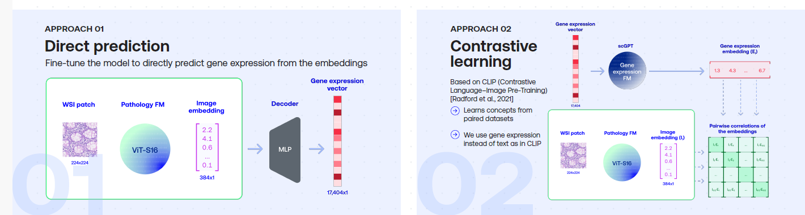

I'm a medical AI researcher with extensive experience who actively contributes to
the AI revolution in healthcare that is currently taking place. At Kaiko.ai
we train, evaluate and apply medical foundation models. With the research team
at ScreenPoint Medical,
we improved the breast cancer detection performance of ScreenPoint's Transpara product. One of the areas I
focused on is measuring and improving the robustness of medical AI models. I did my postdoc at Prof. Jordan Pollack's DEMO Lab at Brandeis University,
and my PhD at the VUB AI Lab. Below are some examples of my work.
Pathology + RNA Foundation Model

Enhancing Pathology Foundation Models with Transcriptomics. Edwin D. de Jong, Mikhail Karasikov, Marharyta Kurban, Moritz Platscher,
Marie Stettler, Fei Tang. Poster at the Genomics England Research Summit 2024.
Full poster: poster.pdf
Pathology Foundation Models (FMs) such as UNI, Phikon, RudolfV and Virchow learn to represent patterns in H&E pathology images using Self-Supervised Learning.
To see whether pathology FMs can be enhanced using RNA data, we compared two approaches: finetuning a pretrained pathology FM by using RNA expression levels as a high-dimensional target vector vs.
using contrastive learning in a CLIP setup . We found that both approaches can improve pathology FM performance, as evaluated on a selection of downstream tasks.
Towards Large-Scale Training of Pathology Foundation Models
To prepare for large-scale pathology FM trainings, we trained several Vision Transformer models on TCGA using DINO and DINO-v2. Paper: Towards Large-Scale Training of Pathology Foundation Models. kaiko.ai, Nanne Aben, Edwin D. de Jong, Ioannis Gatopoulos, Nicolas Känzig, Mikhail Karasikov, Axel Lagré, Roman Moser, Joost van Doorn, Fei Tang.
Foundation Model Robustness Analysis
To analyze what representations a Foundation Model (FM) pre-trained on TCGA using DINO learns,
we cluster the embedding vectors of TCGA patches using t-SNE. This results in clusters
in the embedding space. We then color these clusters in two ways: by disease (left) and
by the medical center from which the images originate (right).
The coloring by disease shows that the FM has learned to distinguish different cancer types.
The clustering on the right however shows that the overall organization of the embedding space
is also strongly influenced by the medical center. This implies a risk for downstream trainings: the embeddings are not only determined by biological features such as
the cancer type, but also by the center of origin, which should not play a role in downstream models and can lead to biases.
Breast Cancer Detection
With the research team at ScreenPoint Medical,
we improved the breast cancer detection performance of ScreenPoint's Transpara product.
The resulting model was evaluated in the large MASAI breast cancer randomized control trial
in Denmark reported by Kristina Lång; see The Lancet article.
This study found that our AI product reduces radiologist workload by 44%, while
detecting 20% more cancer cases, and was recognized by Nature Medicine
as one of the Notable advances of 2023.
Incremental Sequence Learning
Internal representations of digits learned by the model, shown over the course of training. See paper for details.
Recurrent Neural Networks (RNN) can learn to represent internal states that facilitate prediction. This work explores the intuition that
first learning short sequences makes it easier for the model to learn longer sequences. NIPS 2016 Workshop paper:Incremental Sequence Learning (extended version)
Incremental Sequence Learning blog post
MNIST 1D Stroke Dataset
Handwritten digits and letters can naturally be represented as sequences of 1D strokes. To study sequence learning, the well-known MNIST
dataset was transformed into pen strokes that approximately reproduce the digits in the original dataset. Dataset description and download:
MNIST stroke data sequence learning data set: all 70000 MNIST handwritten digit images transformed to 1D stroke sequences.